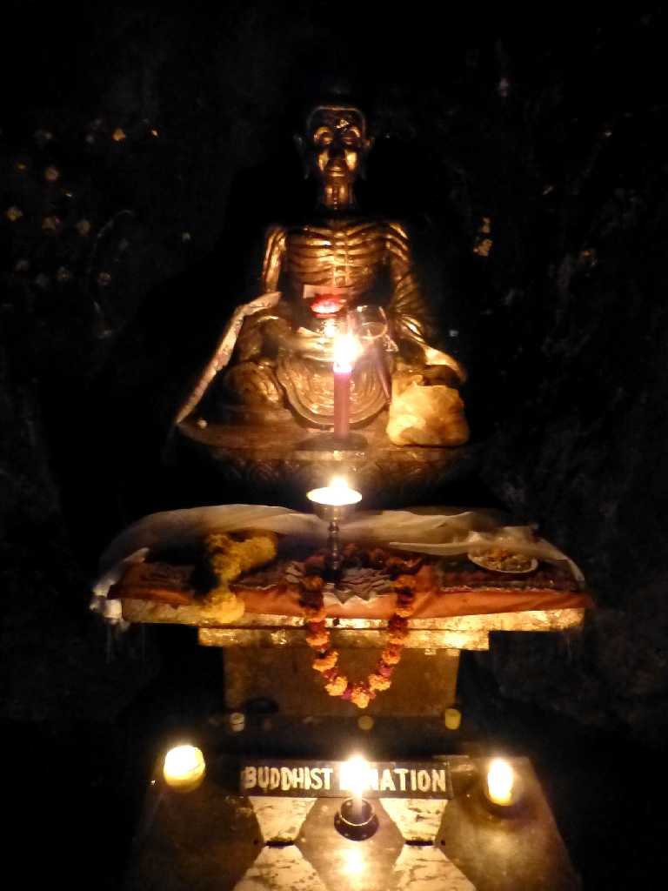
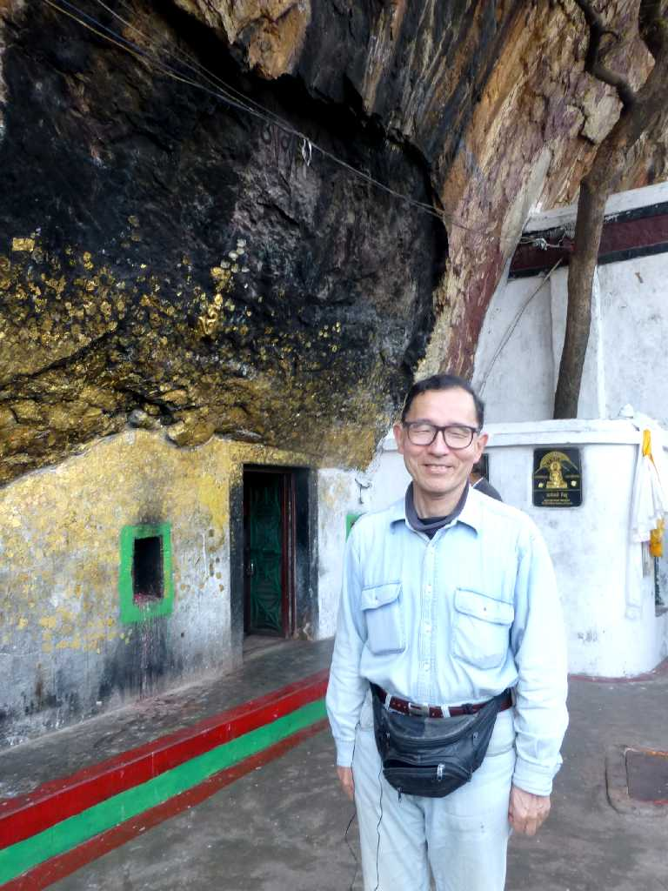
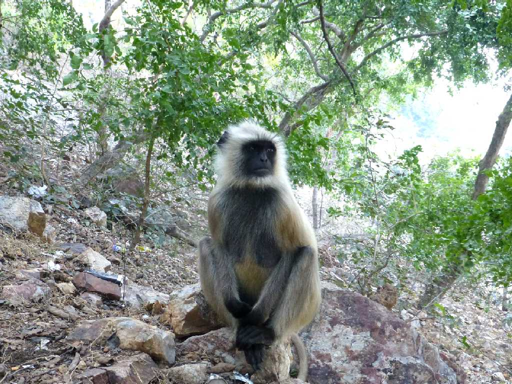

Dungeshwari Cave Bodh Gaya
シッダールタが５人の修行者と共に６年間苦行を行った洞窟と云われる前正覚山

February 3 2015 Dungeshwari Cave

Hanuman Langur Gray Langur Dungeshwari
前正覚山の白猿が我々をお出迎え 全身が白い毛で覆われている白猿はハヌマンラングールと云われ白い猿の姿をした神様の生まれ変わりとされている